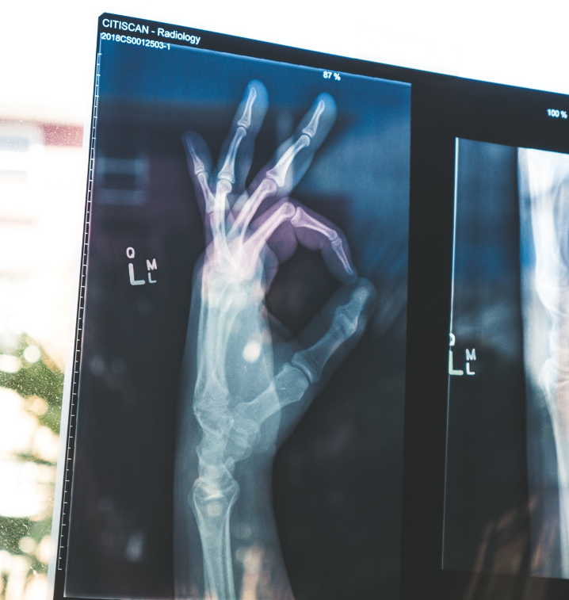

MINISTRY OF HEALTH AND INDIGENOUS MEDICAL SERVICES
Wellbeing
Lifestyle
Travelers
Notices
Contact
Login
English
සිංහල
தமிழ்
HEALTH ALERT
Take precautions provided by Ministry of Health
MINISTRY OF HEALTH AND INDIGENOUS MEDICAL SERVICES
Bone Health

Various elements can influence bone wellbeing. For instance:
The measure of calcium in your eating routine. An eating routine low in calcium adds to lessened bone thickness, early bone misfortune and an expanded danger of breaks.
Great wellsprings of calcium incorporate dairy items, almonds, broccoli, kale, canned salmon with bones, sardines and soy items, for example, tofu. In the event that you think that its hard to get enough calcium from your eating routine, get some information about enhancements.
Great wellsprings of nutrient D incorporate slick fish, for example, salmon, trout, whitefish and fish. Moreover, mushrooms, eggs and strengthened nourishments, for example, milk and grains, are acceptable wellsprings of nutrient D. Daylight likewise adds to the body's creation of nutrient D.
Remember physical action for your day by day schedule. Weight-bearing activities, for example, strolling, running, and climbing stairs, can assist you with building solid bones and moderate bone misfortune.
Evade substance misuse. Try not to smoke. On the off chance that you are a lady, abstain from drinking more than one mixed beverage every day. In the event that you are a man, abstain from drinking in excess of two mixed beverages daily.
The measure of calcium in your eating routine. An eating routine low in calcium adds to lessened bone thickness, early bone misfortune and an expanded danger of breaks.
Great wellsprings of calcium incorporate dairy items, almonds, broccoli, kale, canned salmon with bones, sardines and soy items, for example, tofu. In the event that you think that its hard to get enough calcium from your eating routine, get some information about enhancements.
Great wellsprings of nutrient D incorporate slick fish, for example, salmon, trout, whitefish and fish. Moreover, mushrooms, eggs and strengthened nourishments, for example, milk and grains, are acceptable wellsprings of nutrient D. Daylight likewise adds to the body's creation of nutrient D.
Remember physical action for your day by day schedule. Weight-bearing activities, for example, strolling, running, and climbing stairs, can assist you with building solid bones and moderate bone misfortune.
Evade substance misuse. Try not to smoke. On the off chance that you are a lady, abstain from drinking more than one mixed beverage every day. In the event that you are a man, abstain from drinking in excess of two mixed beverages daily.